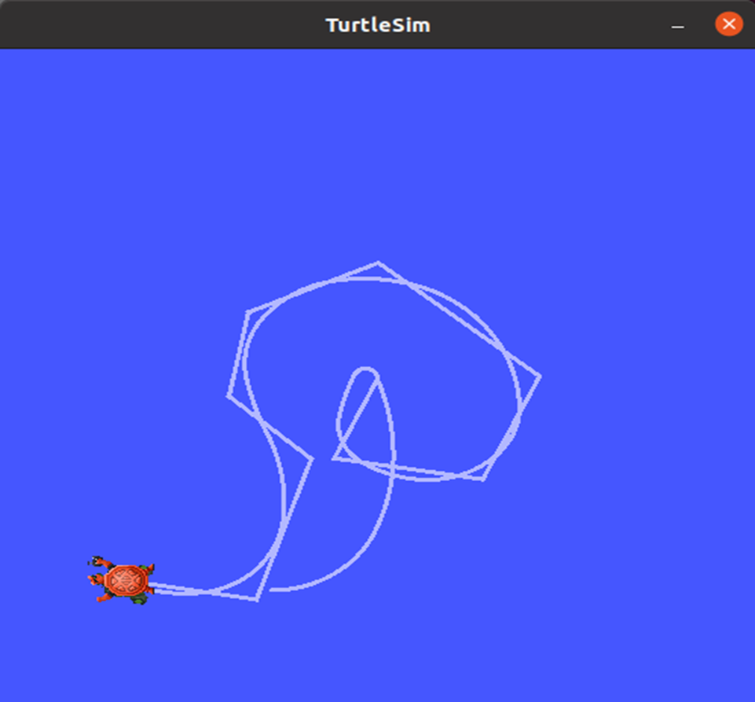

TF：机器人坐标系管理神器
坐标系是我们非常熟悉的一个概念，也是机器人学中的重要基础，在一个完整的机器人系统中，会存在很多坐标系，这些坐标系之间的位置关系该如何管理？
ROS给我们提供了一个坐标系的管理神器——TF。
机器人中的坐标系
机器人中都有哪些坐标系呢？
比如在机械臂形态的机器人中，机器人安装的位置叫做基坐标系Base Frame，机器人安装位置在外部环境下的参考系叫做世界坐标系World Frame，机器人末端夹爪的位置叫做工具坐标系，外部被操作物体的位置叫做工件坐标系，在机械臂抓取外部物体的过程中，这些坐标系之间的关系也在跟随变化。
在移动机器人系统中，坐标系一样至关重要，比如一个移动机器人的中心点是基坐标系Base Link，雷达所在的位置叫做雷达坐标系laser link，机器人要移动，里程计会累积位置，这个位置的参考系叫做里程计坐标系odom，里程计又会有累积误差和漂移，绝对位置的参考系叫做地图坐标系map。
一层一层坐标系之间关系复杂，有一些是相对固定的，也有一些是不断变化的，看似简单的坐标系也在空间范围内变得复杂，良好的坐标系管理系统就显得格外重要。
关于坐标系变换关系的基本理论，在每一本机器人学的教材中都会有讲解，可以分解为平移和旋转两个部分，通过一个四乘四的矩阵进行描述，在空间中画出坐标系，那两者之间的变换关系，其实就是向量的数学描述。
ROS中TF功能的底层原理，就是对这些数学变换进行了封装，详细的理论知识大家可以参考机器人学的教材，我们主要讲解TF坐标管理系统的使用方法。
TF命令行操作
ROS中的TF该如何使用呢？我们先通过两只小海龟的示例，了解下基于坐标系的一种机器人跟随算法。
小海龟跟随例程
这个示例需要我们先安装相应的功能包，然后就可以通过一个launch文件启动，之后我们可以控制其中的一只小海龟，另外一只小海龟会自动跟随运动。
具体运行的效果如何？我们来试一试。
当我们控制一只海龟运动时，另外一只海龟也会跟随运动。

查看TF树
在当前运行的两只海龟中，有哪些坐标系呢，我们可以通过这个小工具来做查看。
默认在当前终端路径下生成了一个frames.pdf文件，打开之后，就可以看到系统中各个坐标系的关系了。
查询坐标变换信息
只看到坐标系的结构还不行，如果我们想要知道某两个坐标系之间的具体关系，可以通过tf2_echo这个工具查看：
运行成功后，终端中就会循环打印坐标系的变换数值了，由平移和旋转两个部分组成，还有旋转矩阵。
坐标系可视化
看数值还不直观？可以试试用可视化软件来做显示：
再让小海龟动起来，Rviz中的坐标轴就会开始运动，这样是不是更加直观了呢！
小海龟跟随的案例有点意思，这背后的原理是怎样的呢？大家不要着急，我们先来了解下TF的使用方法，便于大家慢慢理解。
静态TF广播
我们说TF的主要作用是对坐标系进行管理，那就管理一个试试呗？
坐标变换中最为简单的应该是相对位置不发生变化的情况，比如你家的房子在哪个位置，只要房子不拆，这个坐标应该就不会变化。
在机器人系统中也很常见，比如激光雷达和机器人底盘之间的位置关系，安装好之后基本不会变化。
在TF中，这种情况也称之为静态TF变换，我们来看看在程序中该如何实现？
运行效果
启动终端，运行如下命令：
可以看到当前系统中存在两个坐标系，一个是world，一个是house，两者之间的相对位置不会发生改变，通过一个静态的TF对象进行维护。
代码解析
来看下在代码中是如何创建坐标系并且发布静态变换的。
learning_tf/static_tf_broadcaster.py
#!/usr/bin/env python3
# -*- coding: utf-8 -*-
"""
@作者: 古月居(www.guyuehome.com)
@说明: ROS2 TF示例-广播静态的坐标变换
"""
import rclpy # ROS2 Python接口库
from rclpy.node import Node # ROS2 节点类
from geometry_msgs.msg import TransformStamped # 坐标变换消息
import tf_transformations # TF坐标变换库
from tf2_ros.static_transform_broadcaster import StaticTransformBroadcaster # TF静态坐标系广播器类
class StaticTFBroadcaster(Node):
def __init__(self, name):
super().__init__(name) # ROS2节点父类初始化
self.tf_broadcaster = StaticTransformBroadcaster(self) # 创建一个TF广播器对象
static_transformStamped = TransformStamped() # 创建一个坐标变换的消息对象
static_transformStamped.header.stamp = self.get_clock().now().to_msg() # 设置坐标变换消息的时间戳
static_transformStamped.header.frame_id = 'world' # 设置一个坐标变换的源坐标系
static_transformStamped.child_frame_id = 'house' # 设置一个坐标变换的目标坐标系
static_transformStamped.transform.translation.x = 10.0 # 设置坐标变换中的X、Y、Z向的平移
static_transformStamped.transform.translation.y = 5.0
static_transformStamped.transform.translation.z = 0.0
quat = tf_transformations.quaternion_from_euler(0.0, 0.0, 0.0) # 将欧拉角转换为四元数（roll, pitch, yaw）
static_transformStamped.transform.rotation.x = quat[0] # 设置坐标变换中的X、Y、Z向的旋转（四元数）
static_transformStamped.transform.rotation.y = quat[1]
static_transformStamped.transform.rotation.z = quat[2]
static_transformStamped.transform.rotation.w = quat[3]
self.tf_broadcaster.sendTransform(static_transformStamped) # 广播静态坐标变换，广播后两个坐标系的位置关系保持不变
def main(args=None):
rclpy.init(args=args) # ROS2 Python接口初始化
node = StaticTFBroadcaster("static_tf_broadcaster") # 创建ROS2节点对象并进行初始化
rclpy.spin(node) # 循环等待ROS2退出
node.destroy_node() # 销毁节点对象
rclpy.shutdown()
完成代码的编写后需要设置功能包的编译选项，让系统知道Python程序的入口，打开功能包的setup.py文件，加入如下入口点的配置：
entry_points={
'console_scripts': [
'static_tf_broadcaster = learning_tf.static_tf_broadcaster:main',
],
},
经过这段代码，两个坐标系的变化是描述清楚了，到了使用的时候，我们又该如何查询呢？
TF监听
我们再来学习下如何查询两个坐标系之间的位置关系。
运行效果
启动一个终端，运行如下节点，就可以在终端中看到周期显示的坐标关系了。
代码解析
这个节点中是如何查询坐标关系的，我们来看下代码。
learning_tf/tf_listener.py
#!/usr/bin/env python3
# -*- coding: utf-8 -*-
"""
@作者: 古月居(www.guyuehome.com)
@说明: ROS2 TF示例-监听某两个坐标系之间的变换
"""
import rclpy # ROS2 Python接口库
from rclpy.node import Node # ROS2 节点类
import tf_transformations # TF坐标变换库
from tf2_ros import TransformException # TF左边变换的异常类
from tf2_ros.buffer import Buffer # 存储坐标变换信息的缓冲类
from tf2_ros.transform_listener import TransformListener # 监听坐标变换的监听器类
class TFListener(Node):
def __init__(self, name):
super().__init__(name) # ROS2节点父类初始化
self.declare_parameter('source_frame', 'world') # 创建一个源坐标系名的参数
self.source_frame = self.get_parameter( # 优先使用外部设置的参数值，否则用默认值
'source_frame').get_parameter_value().string_value
self.declare_parameter('target_frame', 'house') # 创建一个目标坐标系名的参数
self.target_frame = self.get_parameter( # 优先使用外部设置的参数值，否则用默认值
'target_frame').get_parameter_value().string_value
self.tf_buffer = Buffer() # 创建保存坐标变换信息的缓冲区
self.tf_listener = TransformListener(self.tf_buffer, self) # 创建坐标变换的监听器
self.timer = self.create_timer(1.0, self.on_timer) # 创建一个固定周期的定时器，处理坐标信息
def on_timer(self):
try:
now = rclpy.time.Time() # 获取ROS系统的当前时间
trans = self.tf_buffer.lookup_transform( # 监听当前时刻源坐标系到目标坐标系的坐标变换
self.target_frame,
self.source_frame,
now)
except TransformException as ex: # 如果坐标变换获取失败，进入异常报告
self.get_logger().info(
f'Could not transform {self.target_frame} to {self.source_frame}: {ex}')
return
pos = trans.transform.translation # 获取位置信息
quat = trans.transform.rotation # 获取姿态信息（四元数）
euler = tf_transformations.euler_from_quaternion([quat.x, quat.y, quat.z, quat.w])
self.get_logger().info('Get %s --> %s transform: [%f, %f, %f] [%f, %f, %f]'
% (self.source_frame, self.target_frame, pos.x, pos.y, pos.z, euler[0], euler[1], euler[2]))
def main(args=None):
rclpy.init(args=args) # ROS2 Python接口初始化
node = TFListener("tf_listener") # 创建ROS2节点对象并进行初始化
rclpy.spin(node) # 循环等待ROS2退出
node.destroy_node() # 销毁节点对象
rclpy.shutdown() # 关闭ROS2 Python接口
完成代码的编写后需要设置功能包的编译选项，让系统知道Python程序的入口，打开功能包的setup.py文件，加入如下入口点的配置：
entry_points={
'console_scripts': [
'static_tf_broadcaster = learning_tf.static_tf_broadcaster:main',
'tf_listener = learning_tf.tf_listener:main',
],
},
好啦，大家现在对TF的基本使用有所了解了。我们继续挑战两只海龟跟随的案例。
海龟跟随功能解析
还是之前小海龟跟随的示例，我们自己通过代码来实现一下。
运行效果
先看下实现的效果，启动终端后，通过如下命令启动例程：
看到的效果和ROS自带的例程相同。
原理解析
在两只海龟的仿真器中，我们可以定义三个坐标系，比如仿真器的全局参考系叫做world，turtle1和turtle2坐标系在两只海龟的中心点，这样，turtle1和world坐标系的相对位置，就可以表示海龟1的位置，海龟2也同理。
要实现海龟2向海龟1运动，我们在两者中间做一个连线，再加一个箭头，怎么样，是不是有想起高中时学习的向量计算？我们说坐标变换的描述方法就是向量，所以在这个跟随例程中，用TF就可以很好的解决。
向量的长度表示距离，方向表示角度，有了距离和角度，我们随便设置一个时间，不就可以计算得到速度了么，然后就是速度话题的封装和发布，海龟2也就可以动起来了。
所以这个例程的核心就是通过坐标系实现向量的计算，两只海龟还会不断运动，这个向量也得按照某一个周期计算，这就得用上TF的动态广播与监听了。
我们一起看下代码该如何实现。
Launch文件解析
先来看下刚才运行的launch文件，里边启动了四个节点，分别是：
- 小海龟仿真器
- 海龟1的坐标系广播
- 海龟2的坐标系广播
- 海龟跟随控制
其中，两个坐标系的广播复用了turtle_tf_broadcaster节点，通过传入的参数名修改维护的坐标系名称。
learning_tf/launch/turtle_following_demo.launch.py
from launch import LaunchDescription
from launch.actions import DeclareLaunchArgument
from launch.substitutions import LaunchConfiguration
from launch_ros.actions import Node
def generate_launch_description():
return LaunchDescription([
Node(
package='turtlesim',
executable='turtlesim_node',
name='sim'
),
Node(
package='learning_tf',
executable='turtle_tf_broadcaster',
name='broadcaster1',
parameters=[
{'turtlename': 'turtle1'}
]
),
DeclareLaunchArgument(
'target_frame', default_value='turtle1',
description='Target frame name.'
),
Node(
package='learning_tf',
executable='turtle_tf_broadcaster',
name='broadcaster2',
parameters=[
{'turtlename': 'turtle2'}
]
),
Node(
package='learning_tf',
executable='turtle_following',
name='listener',
parameters=[
{'target_frame': LaunchConfiguration('target_frame')}
]
),
])
坐标系动态广播
海龟1和海龟2在world坐标系下的坐标变换，在turtle_tf_broadcaster节点中实现，除了海龟坐标系的名字不同之外，针对两个海龟的功能是一样的。
learning_tf/turtle_tf_broadcaster.py
#!/usr/bin/env python3
# -*- coding: utf-8 -*-
"""
@作者: 古月居(www.guyuehome.com)
@说明: ROS2 TF示例-广播动态的坐标变换
"""
import rclpy # ROS2 Python接口库
from rclpy.node import Node # ROS2 节点类
from geometry_msgs.msg import TransformStamped # 坐标变换消息
import tf_transformations # TF坐标变换库
from tf2_ros import TransformBroadcaster # TF坐标变换广播器
from turtlesim.msg import Pose # turtlesim小海龟位置消息
class TurtleTFBroadcaster(Node):
def __init__(self, name):
super().__init__(name) # ROS2节点父类初始化
self.declare_parameter('turtlename', 'turtle') # 创建一个海龟名称的参数
self.turtlename = self.get_parameter( # 优先使用外部设置的参数值，否则用默认值
'turtlename').get_parameter_value().string_value
self.tf_broadcaster = TransformBroadcaster(self) # 创建一个TF坐标变换的广播对象并初始化
self.subscription = self.create_subscription( # 创建一个订阅者，订阅海龟的位置消息
Pose,
f'/{self.turtlename}/pose', # 使用参数中获取到的海龟名称
self.turtle_pose_callback, 1)
def turtle_pose_callback(self, msg): # 创建一个处理海龟位置消息的回调函数，将位置消息转变成坐标变换
transform = TransformStamped() # 创建一个坐标变换的消息对象
transform.header.stamp = self.get_clock().now().to_msg() # 设置坐标变换消息的时间戳
transform.header.frame_id = 'world' # 设置一个坐标变换的源坐标系
transform.child_frame_id = self.turtlename # 设置一个坐标变换的目标坐标系
transform.transform.translation.x = msg.x # 设置坐标变换中的X、Y、Z向的平移
transform.transform.translation.y = msg.y
transform.transform.translation.z = 0.0
q = tf_transformations.quaternion_from_euler(0, 0, msg.theta) # 将欧拉角转换为四元数（roll, pitch, yaw）
transform.transform.rotation.x = q[0] # 设置坐标变换中的X、Y、Z向的旋转（四元数）
transform.transform.rotation.y = q[1]
transform.transform.rotation.z = q[2]
transform.transform.rotation.w = q[3]
# Send the transformation
self.tf_broadcaster.sendTransform(transform) # 广播坐标变换，海龟位置变化后，将及时更新坐标变换信息
def main(args=None):
rclpy.init(args=args) # ROS2 Python接口初始化
node = TurtleTFBroadcaster("turtle_tf_broadcaster") # 创建ROS2节点对象并进行初始化
rclpy.spin(node) # 循环等待ROS2退出
node.destroy_node() # 销毁节点对象
rclpy.shutdown() # 关闭ROS2 Python接口
完成代码的编写后需要设置功能包的编译选项，让系统知道Python程序的入口，打开功能包的setup.py文件，加入如下入口点的配置：
entry_points={
'console_scripts': [
'static_tf_broadcaster = learning_tf.static_tf_broadcaster:main',
'turtle_tf_broadcaster = learning_tf.turtle_tf_broadcaster:main',
'tf_listener = learning_tf.tf_listener:main',
],
},
海龟跟随
坐标系都正常广播了，接下来我们就可以订阅两只海龟的位置关系，并且变换成速度指令进行控制啦。
learning_tf/turtle_following.py
#!/usr/bin/env python3
# -*- coding: utf-8 -*-
"""
@作者: 古月居(www.guyuehome.com)
@说明: ROS2 TF示例-通过坐标变化实现海龟跟随功能
"""
import math
import rclpy # ROS2 Python接口库
from rclpy.node import Node # ROS2 节点类
import tf_transformations # TF坐标变换库
from tf2_ros import TransformException # TF左边变换的异常类
from tf2_ros.buffer import Buffer # 存储坐标变换信息的缓冲类
from tf2_ros.transform_listener import TransformListener # 监听坐标变换的监听器类
from geometry_msgs.msg import Twist # ROS2 速度控制消息
from turtlesim.srv import Spawn # 海龟生成的服务接口
class TurtleFollowing(Node):
def __init__(self, name):
super().__init__(name) # ROS2节点父类初始化
self.declare_parameter('source_frame', 'turtle1') # 创建一个源坐标系名的参数
self.source_frame = self.get_parameter( # 优先使用外部设置的参数值，否则用默认值
'source_frame').get_parameter_value().string_value
self.tf_buffer = Buffer() # 创建保存坐标变换信息的缓冲区
self.tf_listener = TransformListener(self.tf_buffer, self) # 创建坐标变换的监听器
self.spawner = self.create_client(Spawn, 'spawn') # 创建一个请求产生海龟的客户端
self.turtle_spawning_service_ready = False # 是否已经请求海龟生成服务的标志位
self.turtle_spawned = False # 海龟是否产生成功的标志位
self.publisher = self.create_publisher(Twist, 'turtle2/cmd_vel', 1) # 创建跟随运动海龟的速度话题
self.timer = self.create_timer(1.0, self.on_timer) # 创建一个固定周期的定时器，控制跟随海龟的运动
def on_timer(self):
from_frame_rel = self.source_frame # 源坐标系
to_frame_rel = 'turtle2' # 目标坐标系
if self.turtle_spawning_service_ready: # 如果已经请求海龟生成服务
if self.turtle_spawned: # 如果跟随海龟已经生成
try:
now = rclpy.time.Time() # 获取ROS系统的当前时间
trans = self.tf_buffer.lookup_transform( # 监听当前时刻源坐标系到目标坐标系的坐标变换
to_frame_rel,
from_frame_rel,
now)
except TransformException as ex: # 如果坐标变换获取失败，进入异常报告
self.get_logger().info(
f'Could not transform {to_frame_rel} to {from_frame_rel}: {ex}')
return
msg = Twist() # 创建速度控制消息
scale_rotation_rate = 1.0 # 根据海龟角度，计算角速度
msg.angular.z = scale_rotation_rate * math.atan2(
trans.transform.translation.y,
trans.transform.translation.x)
scale_forward_speed = 0.5 # 根据海龟距离，计算线速度
msg.linear.x = scale_forward_speed * math.sqrt(
trans.transform.translation.x ** 2 +
trans.transform.translation.y ** 2)
self.publisher.publish(msg) # 发布速度指令，海龟跟随运动
else: # 如果跟随海龟没有生成
if self.result.done(): # 查看海龟是否生成
self.get_logger().info(
f'Successfully spawned {self.result.result().name}')
self.turtle_spawned = True
else: # 依然没有生成跟随海龟
self.get_logger().info('Spawn is not finished')
else: # 如果没有请求海龟生成服务
if self.spawner.service_is_ready(): # 如果海龟生成服务器已经准备就绪
request = Spawn.Request() # 创建一个请求的数据
request.name = 'turtle2' # 设置请求数据的内容，包括海龟名、xy位置、姿态
request.x = float(4)
request.y = float(2)
request.theta = float(0)
self.result = self.spawner.call_async(request) # 发送服务请求
self.turtle_spawning_service_ready = True # 设置标志位，表示已经发送请求
else:
self.get_logger().info('Service is not ready') # 海龟生成服务器还没准备就绪的提示
def main(args=None):
rclpy.init(args=args) # ROS2 Python接口初始化
node = TurtleFollowing("turtle_following") # 创建ROS2节点对象并进行初始化
rclpy.spin(node) # 循环等待ROS2退出
node.destroy_node() # 销毁节点对象
rclpy.shutdown() # 关闭ROS2 Python接口
完成代码的编写后需要设置功能包的编译选项，让系统知道Python程序的入口，打开功能包的setup.py文件，加入如下入口点的配置：
entry_points={
'console_scripts': [
'static_tf_broadcaster = learning_tf.static_tf_broadcaster:main',
'turtle_tf_broadcaster = learning_tf.turtle_tf_broadcaster:main',
'tf_listener = learning_tf.tf_listener:main',
'turtle_following = learning_tf.turtle_following:main',
],
},
参考链接
https://docs.ros.org/en/humble/Tutorials/Tf2/Tf2-Main.html